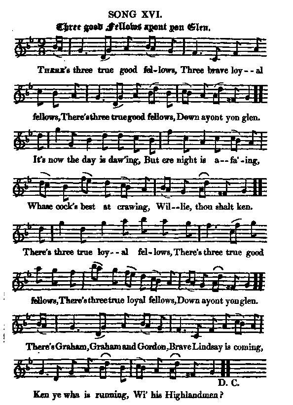

Three good Fellows ayont yon Glen
Les trois camarades
Battle of Killiecrankie : 17th June 1689
Bataille de Killiecrankie : 17 juin 1689
Tune - Melodie"Three good Fellows ayont yon Glen "
from Hogg's "Jacobite Reliques" N° 16
Variations MIDI
Source: McGibbon, "Scots Tunes", Book II, pg. 50/51, c. 1746
Sequenced by Christian Souchon

|
According to James Hogg "The air is strongly characteristic of that country" (Highlands) "Sources for notated versions: McGibbon's 1746 Scots Tunes, vol. ii, pg. 18 [Johnson]; William Gunn Bagpipe Book 3rd Collection [Martin]. Aird (Selection of Scotch, English, Irish and Foreign Airs), vol. 5, 1797; pg. 49. Andrez (Recueil de Contredanses Anglaises), c. 1780; pg. 31. Carlin (The Gow Collection), 1986; No. 562. J. Gow (5th Collection of Strathspey Reels), 1809; pg. 19. Johnson (Two Hundred Favourite Country Dances, vol. 7), 1756; pg. 61. D. Johnson (Scottish Fiddle Music in the 18th Century), 1984; No. 18, pgs. 44-45. Kerr (Merry Melodies), vol. 3; No. 285, pg. 31 (appears as "There's Three Guid Fellows"). Martin (Traditional Scottish Fiddling), 2002; pg. 83. McGibbon (Scots Tunes, book II), c. 1746; pg. 50-51. Oswald (Caledonian Pokcet Companion), 1760; pg. V,1. Source "The Fiddler's Companion" (cf. liens). |
Selon James Hogg, "cet air est tout à fait caractéristique des Highlands." Sources de versions notées: McGibbon: 1746 "Scots Tunes", vol. ii, pg. 18 [cité par Johnson]; William Gunn "Bagpipe Book" 3ème Collection [cité par Martin]. Aird ("Selection of Scotch, English, Irish and Foreign Airs"), vol. 5, 1797; pg. 49. Andrez ("Recueil de Contredanses Anglaises"), c. 1780; pg. 31. Carlin ("The Gow Collection"), 1986; No. 562. J. Gow ("5th Collection of Strathspey Reels"), 1809; pg. 19. Johnson ("Two Hundred Favourite Country Dances", vol. 7), 1756; pg. 61. D. Johnson ("Scottish Fiddle Music in the 18th Century"), 1984; No. 18, pgs. 44-45. Kerr ("Merry Melodies"), vol. 3; No. 285, pg. 31 (appears as "There's Three Guid Fellows"). Martin ("Traditional Scottish Fiddling"), 2002; pg. 83. McGibbon (Scots Tunes, book II), c. 1746; pg. 50-51. Oswald (Caledonian Pokcet Companion), 1760; pg. V,1. Source "The Fiddler's Companion" (cf. liens). |

|
THREE GOOD FELLOWS AYONT YON GLEN 1. There's three good fellows, Three brave, loyal fellows, There's three good fellows, Down ayont yon glen. It's now the day is daw'ing, But ere night is a-fa'ing, Whose cock's best at crawing, Willie [1], thou shalt ken. There's three true loyal fellows, There's three true good fellows, There's three true loyal fellows, Down ayont yon glen. There's three good fellows, Three brave, loyal fellows, There's three good fellows, Down ayont yon glen. 2. There's Graham, Graham [2] and Gordon. Brave Lindsay [3] is coming. Ken ye wha is running, Wi' his Highlandmen? 'Tis he that's ay the foremost When the battle is warmest, The bravest and the kindest Of all Highlandmen. [8] There's three true good fellows, etc... 3. There's Skye's noble chieftain, [4] Hector[7], and bold Evan [5] Reoch, Bane [7], Macrabrach, [6] And the true Maclean. [4] There's now no retreating, For the clans are waiting, And every heart is beating, For honour, and for fame! There's three true good fellows, etc... Source: "The Jacobite Relics of Scotland, being the Songs, Airs and Legends of the Adherents to the House of Stuart" collected by James Hogg, published in Edinburgh by William Blackwood in 1819. |
LES TROIS CAMARADES 1. Oui, ce sont trois camarades, Tous trois, loyaux et braves, Oui, trois bons camarades, Qui viennent d'au-delà des champs. Voici le jour qui se lève. Avant qu'il ne s'achève Tu sauras qui, Guillot [1], élève Le mieux son coq pour le chant. Ce sont trois bons camarades, Tous trois loyaux et braves Et aussi bons qu'ils sont braves, Là-bas, au-delà des champs. Oui ce sont trois camarades, Tous trois, loyaux et braves, Oui, trois bons camarades, Qui viennent d'au-delà des champs. 2. Graham [2], Gordon mènent la danse. Puis c'est Linsay [3] qui s'avance. A toute allure, je pense, Avec tous ses Montagnards, Celui que l'on voit en tête Aux belliqueuses fêtes Est le plus brave et plus honnête Parmi tous nos Montagnards. [8] Oui, ce sont trois bons camarades, etc... 3. Venu de Skye, le chef aimable, [4] Hector [7], Evan le brave, [5] Reoch, Bane, [7] Macrabrach [6] Et McLean [4], franc comme l'or. Plus question de retraite, Lorsque les clans s'apprêtent A combattre et n'ont en tête Que la renommée, que l'honneur! Oui ce sont trois bons camarades, etc... (Trad. Christian Souchon(c)2009) |
|
[1] Willie: KIng William III. [2] "This is manifestly an ancient song. Some verses of it are popular, but I never heard so much of it as is here [...] I think it must be evident [...] that it is the chant of some Highland bard, previous to the battle of Killicrankie. The repetition of the name of Graham, the first on the list, is testimony sufficient of this. [3] By Lindsay is probably meant Colin earl of Balcarras; [4] But the song is either imperfect, or very hard to be understood. However, it is so far correspondent with the battle of Killicrankie; for the young chief of Skye was there, as was also the true Mclean. [5] The Evan mentioned is likely the Sir Evan Dhu Cameron mentioned likewise in the succeeding song. [6] The rest it is impossible to trace; but it is likely that they may all be wrong spelled. A Highland gentleman whom I consulted, supposes that by Macrabrach is meant a son of the laird of Coll, and that it should have been spelled McAbrach. [7] If this could be ascertained, it is no great stretch of fancy, to suppose that Hector and Reoch Bane were likewise chieftains of the clan Maclean, and that the song may be derived from some Gaelic rhyme made by a bard of that sept. [8] The air is strongly characteristic of that country; and the character of the hero who succeeds to Lindsay, and whose name is not mentioned, seems very applicable to Alaster Mcdonald of Glengary, who carried King James' standard at the battle of Killiecrankie." James Hogg in "Jacobite Relics" |
[1] Guillot: le roi Guillaume III. [2] "Ce chant est manifestement ancien. Certains de ses couplets sont connus de tous, mais je n'en ai jamais entendu une version aussi longue [...] Je tiens pour évident qu'il fut composé par quelque barde des Hautes Terres avant la bataille de Killiecrankie. L'apparition du nom de Graham en tête de liste en est une preuve suffisante. [3] Lindsay désigne sans doute Colin, comte de Bacarras. [4] Mais le texte est sans doute altéré et de ce fait difficile à comprendre. Il n'en reste pas moins qu'il évoque clairement Killiecrankie, lorsqu'il met en scène le jeune chef de Skye, ainsi que l'aimable McLean. [5] Quant à l'Evan dont il est question, c'est sûrement Sir Evan Dhu Cameron également cité dans le chant suivant. [6] Identifier les autres noms s'avère impossible. Ils sont sans doute tous mal orthographiés. Un natif des Highlands que j'ai consulté suppose que Macrabrach désigne un des fils du Laird de Coll et qu'il faut lire McAbrach. [7] On peut supposer sans trop s'avancer que Hector et Reoch Bane étaient, eux aussi, des chefs locaux du clan McLean et que ce chant est adapté d'un poème gaélique composé par un barde issu de ce "sept" (clan affilié). [8] Cet air est très caractéristique de cette région et le personnage qui seconde Lindsay et dont le nom n'est pas prononcé pourrait bien être Alexandre McDonald de Glengary, qui portait l'étendard du Roi Jacques à la bataille de Killiecrankie." James Hogg in "Jacobite Relics" |